Organize tudo num canvas
Cada projeto é um bloco com a branch do git, os arquivos não comitados e as conversas mais recentes. Agrupe por Trabalho, Freela e Pessoal.
O canvas para quem trabalha com agentes
Cada pasta vira um bloco num canvas infinito. Você vê na hora o que cada conversa do Claude Code está fazendo, o que terminou e o que parou esperando por você.

01 · Do pedido à mudança pronta
Menos troca de janela, nada parado sem você saber.
Cada projeto é um bloco com a branch do git, os arquivos não comitados e as conversas mais recentes. Agrupe por Trabalho, Freela e Pessoal.
O chat completo abre no painel lateral, numa janela própria ou como um bloco no canvas. Cole prints, anexe arquivos e dite.
Cada subagente aparece embaixo da conversa que o lançou, com o que está fazendo agora e o que entregou no fim.
Aprove permissões, responda perguntas e leia o diff de cada arquivo editado, direto no chat.
Terminais embutidos no canvas, explorador de arquivos com as cores do git e editor com o tema do VS Code.
"Cria um grupo Freela com essas duas pastas." A barra de comando entende texto e voz e arruma tudo para você.
02 · Modo design
Abra a página do projeto dentro do Argus, clique em qualquer ponto e deixe um comentário. O Claude ajusta o código real, não um mockup à parte.

03 · Do seu jeito
O Argus roda o claude que você já tem instalado. Sem chave de API e sem servidor no meio.
Usa o login do Claude Code que já existe na máquina, com o mesmo CLAUDE.md, as mesmas configurações e os mesmos MCPs.
A pessoal num grupo, a da empresa em outro. O limite de uso de cada uma fica à vista na barra de título.
Claude Code, Codex, Gemini e Cursor. Uma conversa pode delegar etapas para outro agente e você acompanha cada uma.
04 · Acompanhamento
Notificação do sistema, ícone na barra de menus e a cor de cada conversa avisam quando o Claude termina ou precisa de uma resposta.
05 · Comece agora
Grátis. Precisa do Claude Code instalado e logado na sua máquina.
.dmg e .zip, com atualização dentro do app.
Baixar → WindowsInstalador de um clique, sem pedir administrador.
Baixar → LinuxUm arquivo só, roda na maioria das distros.
Baixar →# abra a pasta atual no canvas, como o code . do VS Code $ cd ~/projetos/meu-app $ argus .
06 · Perguntas
Não. O app é gratuito. Ele usa a sua assinatura do Claude, a mesma que você já usa no terminal.
Não. O Argus roda o claude instalado na sua máquina, com o login que já existe nele.
Não. O app roda local, sem servidor no meio. As conversas vão para o Claude do mesmo jeito que iriam pelo terminal.
Não é a ideia. Dá para ver, navegar e fazer edições simples no código, mas o foco é acompanhar e conversar com os agentes.
Sim. O Argus enxerga as sessões abertas fora do app (terminal, VS Code) e mostra o status delas na pasta.
Pelo botão "Atualizar para" na barra de título. O app procura versões novas sozinho.